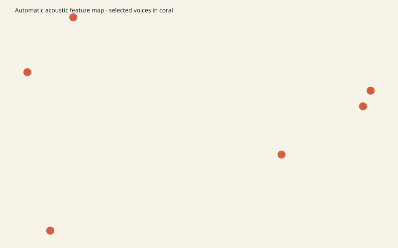

Human reviewed: no. Demographic age and region were not inferred.

| Slot | Model ID | Published category | Measured description |
|---|---|---|---|
| Speaker F1 | zf_002 | female | middle measured register, measured measured pace; automatic acoustic profile |
| Speaker F2 | zf_003 | female | higher measured register, slower measured pace; automatic acoustic profile |
| Speaker F3 | zf_008 | female | lower measured register, quicker measured pace; automatic acoustic profile |
| Speaker M1 | zm_030 | male | lower measured register, quicker measured pace; automatic acoustic profile |
| Speaker M2 | zm_089 | male | higher measured register, measured measured pace; automatic acoustic profile |
| Speaker M3 | zm_100 | male | middle measured register, slower measured pace; automatic acoustic profile |
{'female': [{'speakers': ['zf_002', 'zf_003', 'zf_008'], 'score': 0.6406402467544919, 'minimumEmbeddingDistance': 0.32806093594269625, 'pitchCoverage': 1.0, 'spectralDiversity': 1.0680448799067268, 'speakingRateDiversity': 1.0}], 'male': [{'speakers': ['zm_030', 'zm_089', 'zm_100'], 'score': 0.7725735119895031, 'minimumEmbeddingDistance': 0.4888876231173285, 'pitchCoverage': 1.0, 'spectralDiversity': 1.3579021284998163, 'speakingRateDiversity': 1.0}]}